From a server to a toyline
Table of Contents
This is a followup to “A Custom Supertuxkart Server” post from june 2024.
People generally enjoyed my custom NUC-Kart STK server, unfortunately I had to get back home with it. Once our offsite week has ended, our boss (who coincidentally happens to have won our tournament) green-lighted the idea of having a full-time running VM hosting a STK server, based on what I’ve done on the NUC.
Going virtual
For this 2025 edition of our offsite annual meeting, I had to travel by train. Unfortunately that means smaller carrying cases and trying to pack as efficiency as possible. As such, the NUC server won’t be with us this year.
Or will it?
What if, as a way to immortalize the NUC-Kart, it was a playable character? That would be neat, but I don’t have any real game-dev nor 3D texturing experience to make a full add-on.
Thankfully STK’s team has both a great guide to help making assets for the game and a Blender addons plugin with all required tools to get started.
Because most of the NUC-Kart was 3D-printed, I had most of the shapes already available to me, all I needed was to recreate wheels, NUC itself and my wooden sticks assembly to hold the spoiler piece.
| 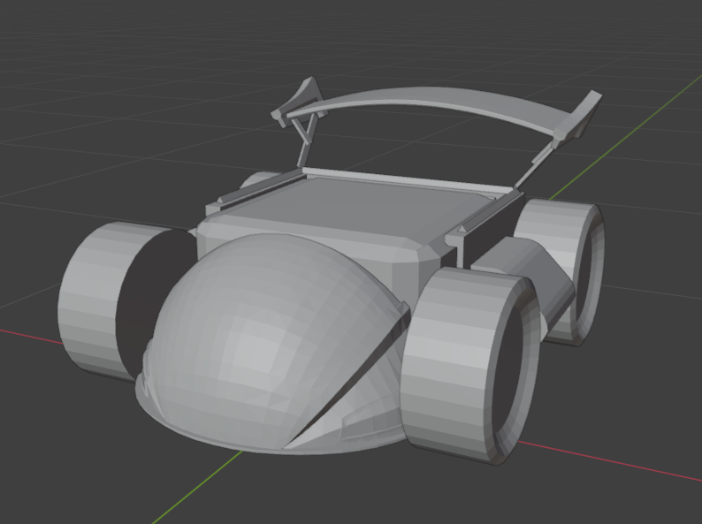 | 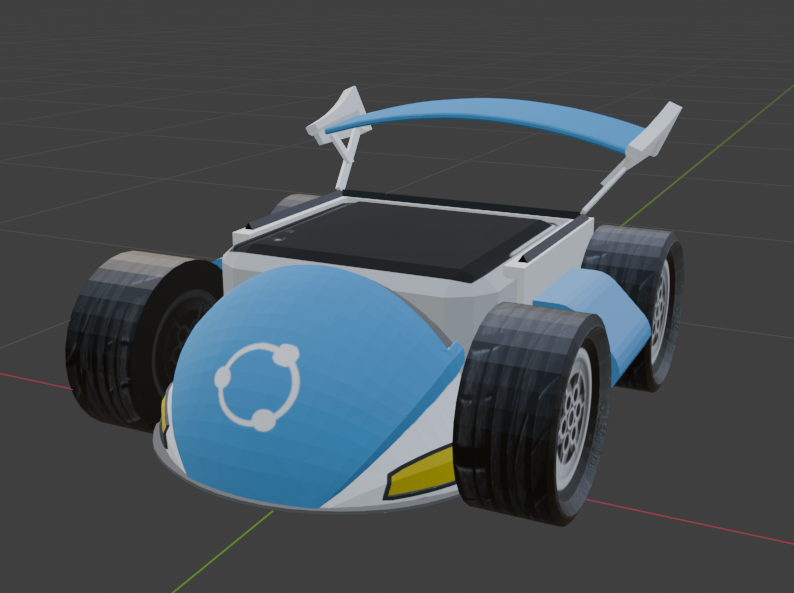 |
Color blocking was quickly hacked with Blender’s painting feature and streamlined with Gimp. As of February I had an almost working add-on. Missing things were (and still are to this day) nitro emitter that’s badly placed and Christmas hat that’s broken. The Blender plugin wasn’t cooperative so I let it be, the addon is good enough!

Size doesn’t matter
Fast-forwarding may 2025, two month before our meeting.
I suddenly got this idea of making toy-scaled versions of the NUC-Kart. That would give a little souvenir to attendees. Also, that would be a cool idea for this year’s prizes!
Back to the drawing board, I had already made most of the 3D assets for the add-on earlier this year, so it was only a matter of tweaking the files to make them 3D printable.
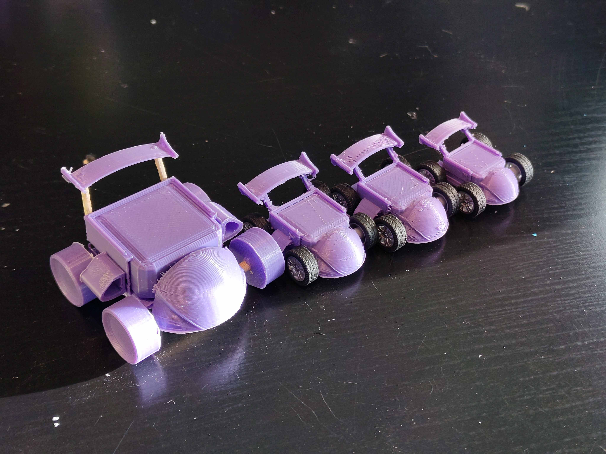I iterated quite a bit over size, meshes and wheel placement. At first I thought about 3D printing everything, but to have the most “toy-like” vibe, having die-cast “real” wheels was almost mandatory. As such, these wheels dictated the scale of the rest of the model.
Unfortunately for me but much to the delight of my colleagues, I felt like having those special toys only for the podium winners was not enough. My workshop then became a little factory, making 16 karts, one for each attendee.
| 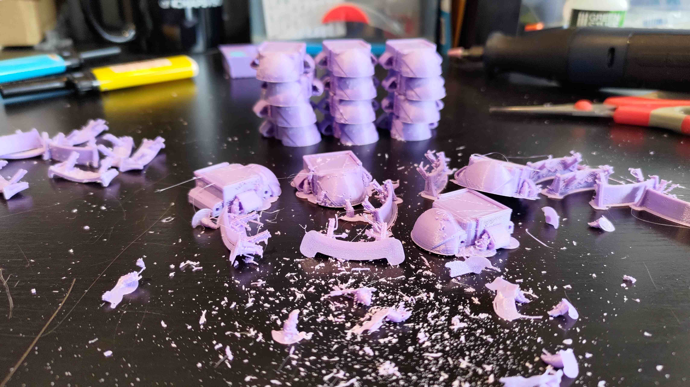 | 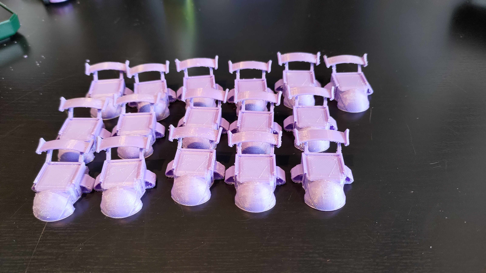 | 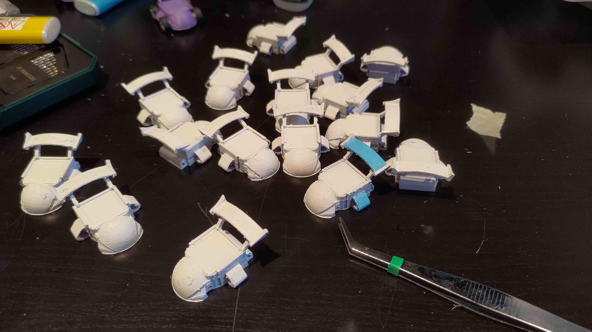 |
Once assembled, the little kart Army looked quite nice. 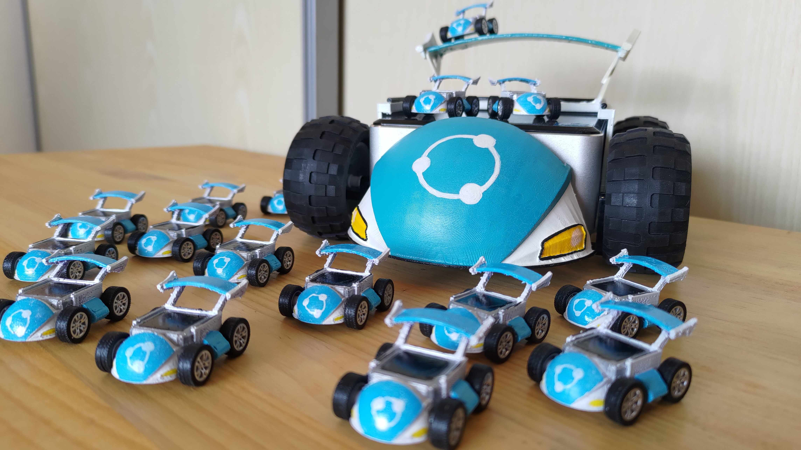
| 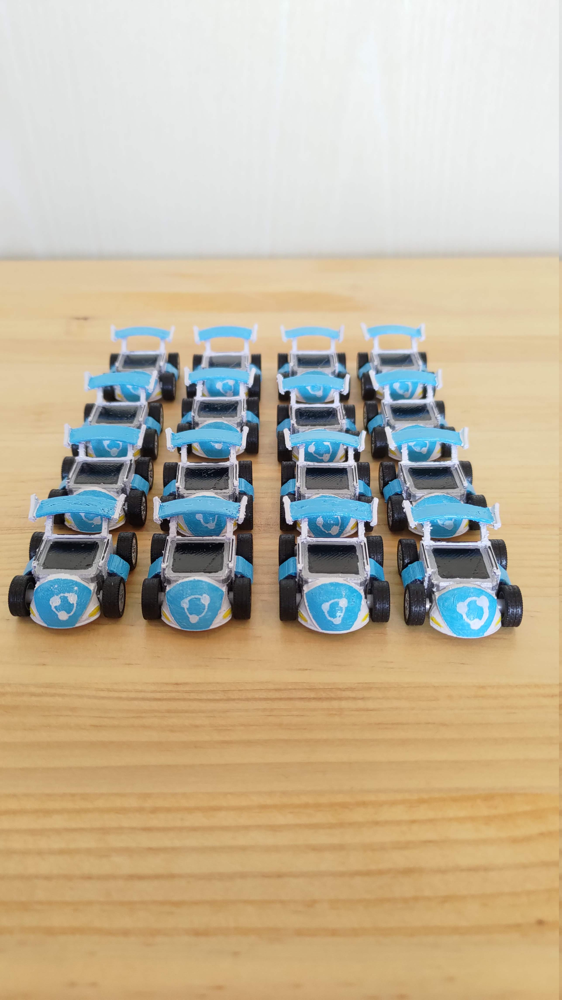 | 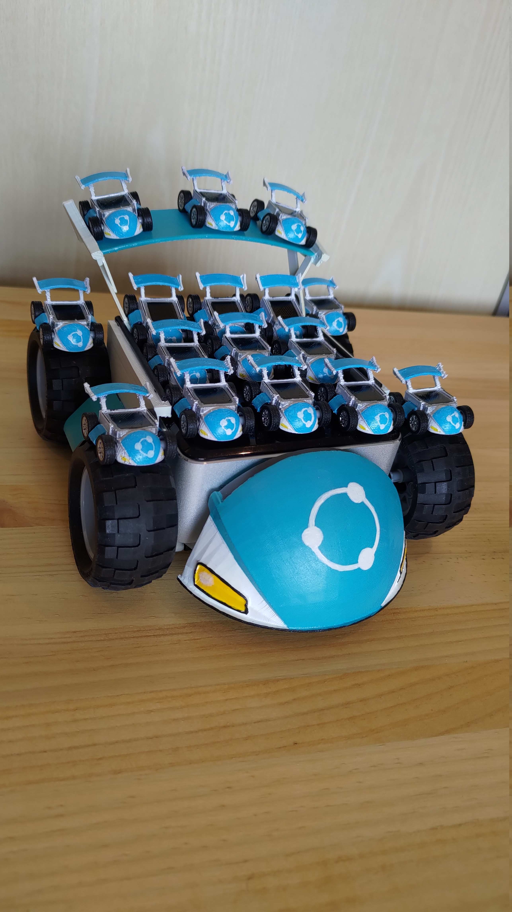 |
Making a packaging
Well, not really a packaging, more like a little plastic diorama-looking box. That would serve two main goals: having a safe way to transport the little karts as well as having a fun way to display the car.
I hopped on STK, enabled the free camera mode to hover over the tracks and took screenshots of 4 maps. I then used Gimp to create a well-fitted template using my screenshots that would fit inside plastic cupcake boxes I had still around from a previous project.
| 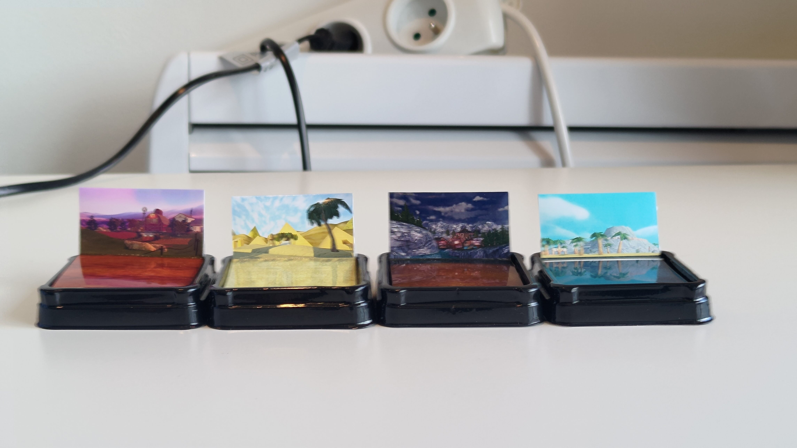 | 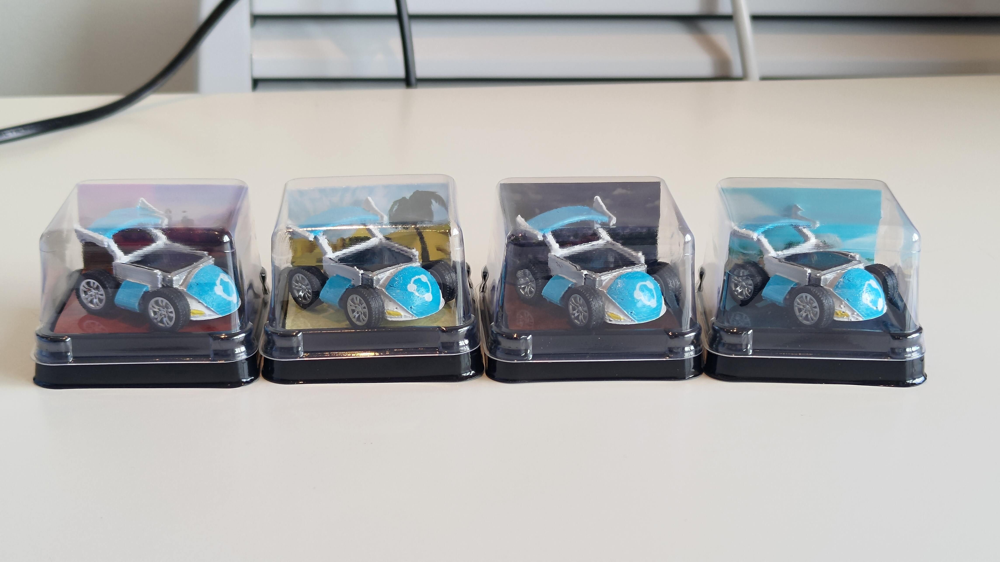 |
Trophies
All of this is about a SuperTuxKart tournament, remember? I ditched my initial idea of giving the top three players a kart so I now needed to think of something new to make up for it.
I took last year design and iterated over it. Company logo over a pedestal is intemporal and still seemed like a nice idea to me. But what if I could make it a bit more interesting?
It snapped to me: I now have two little metallic rods inside each Kart, used by the wheel assembly. With a little bit of tweaking, a platform over a pillar and two magnets, I should be able to merge the Kart with the trophies for a even better looking way to display them.
| 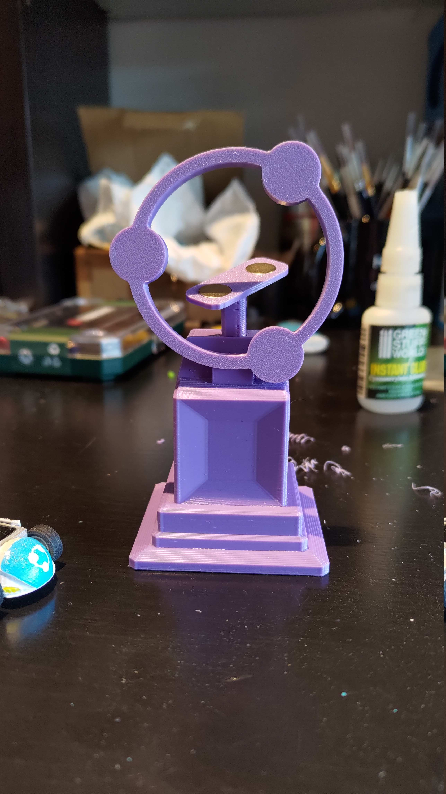 | 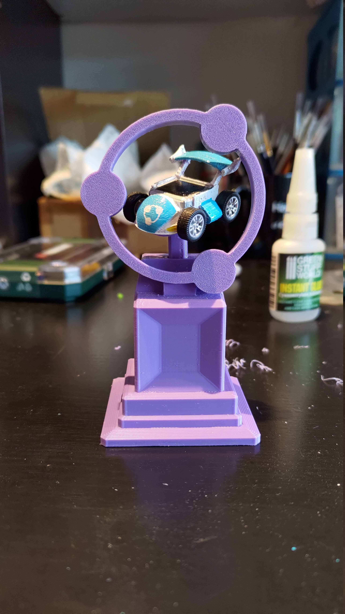 |
Once painted, I must admit, I was very proud of myself.
Last elephant in the room: all of this started because I could not travel with a big box containing the NUC server. I now have about the same footprint with 16 little plastic boxes and 3 trophies.
Thankfully, our guesthouse hosts were kind enough to let me ship the box to them, and everything arrived on time.
The big karting day episode 2
Unfortunately I don’t have much to share about the tournament itself. As usual, insults, shouts, taunting and ultimately, clapping.